《深度学习入门：基于python的理论与实现》读书笔记
第1章 前言
这是学习《深度学习入门：基于python的理论与实现》一书的过程中所作摘要。作者是斋藤康毅。 《深度学习入门：基于python的理论与实现》和《深度学习进阶：自然语言处理》两书深入浅出，写的很精彩，个人认为即使是非计算机专业的人员也能够几乎没有门槛的阅读。原书第一章是介绍python基础知识，故不再赘述。
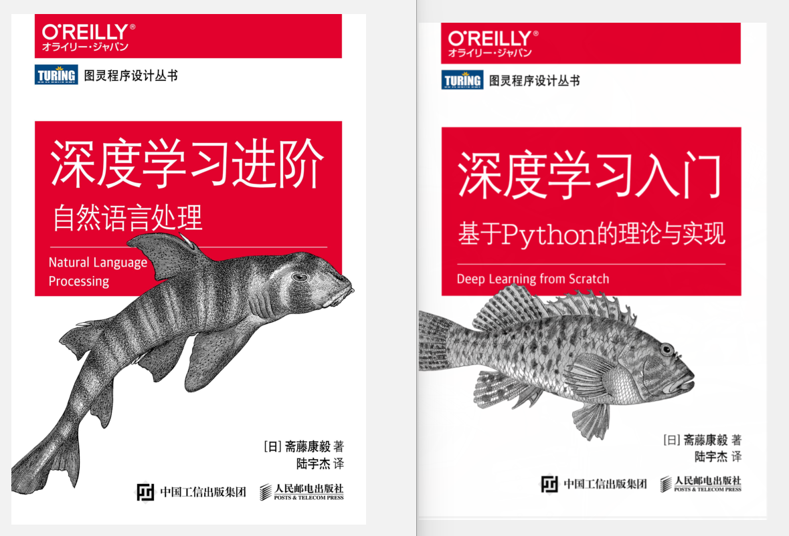
第2章 感知机
感知机接收多个输入信号，输出一个信号： $ y=
\begin{cases}
0, & (b+w_1x_1+w_2x_2\le0)\
1, & (b+w_1x_1+w_2x_2>0)
\end{cases}$
感知机会计算输入信号和权重的乘积，然后加上偏置，如果这个值大于0则输出1，否则输出0。
具体地说，$w_1$和$w_2$表示各个信号的权重，是控制输入信号的重要性的参数，而偏置是调整神经元被激活的容易程度（输出信号为 1 的程度）的参数。
与门：and 全1为1否则为0 与非门则相反
或门：or 有1为1
异或门：xor 仅当有1有0时为1
单层感知机的局限性就在于它只能表示由一条直线分割的空间（线性空间），无法分离非线性空间。
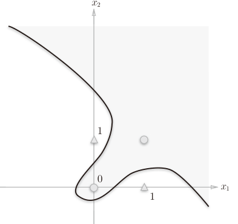
因此单层感知机不能表示异或门。可通过多层感知机实现。
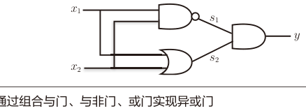
总结：
• 感知机是具有输入和输出的算法。给定一个输入后，将输出一个既定的值。
• 感知机将权重和偏置设定为参数。
• 使用感知机可以表示与门和或门等逻辑电路。
• 异或门无法通过单层感知机来表示。
• 使用2层感知机可以表示异或门。
• 单层感知机只能表示线性空间，而多层感知机可以表示非线性空间。
• 多层感知机（在理论上）可以表示计算机。
第3章 神经网络
神经网络：我们把最左边的一列称为输入层，最右边的一列称为输出层，中间的一列称为中间层。中间层有时也称为隐藏层。
激活函数(activation function)。 如“激活”所示，激活函数的作用在于决定如何来激活输入信号的总和。
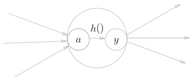
首先，计算加权输入信号和偏置的总和，记为a：$a = b + w_1x_1 + w_2x_2$，然后用h()函数将a转换为输出y：$y = h(a)$。
阶跃函数
$ y=
\begin{cases}
0, & x\le0\
1, & x>0
\end{cases}$，激活函数以阈值为界，一旦输入超过阈值，就切换输出。这样的函数称为“阶跃函数”。
感知机使用了阶跃函数。如果将激活函数从阶跃函数换成其他函数，就可以进入神经网络的世界了。
sigmoid函数
$h(x)=\frac{1}{1+exp(-x)}$，exp(−x)表示$e^{-x}$的意思，或者$h(x)=\frac{1}{1+e^{-x}}$
sigmoid函数和阶跃函数的比较（虚线是阶跃函数）：
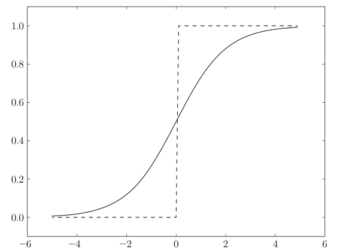
不同：
1.sigmoid函数是一条平滑的曲线，输出随着输入发生连续性的变化。而阶跃函数以0为界，输出发生急剧性的变化。
2.相对于阶跃函数只能返回0或1，sigmoid函数可以返回0.731 . . .、0.880 . . .等实数（这一点和刚才的平滑性有关）。也就是说，感知机中神经元之间流动的是0或1的二元信号，而神经网络中流动的是连续的实数值信号。
相同：
1.两者的结构均是“输入小时，输出接近0（为0）；随着输入增大，输出向1靠近（变成1）”。也就是说，当输入信号为重要信息时，阶跃函数和sigmoid函数都会输出较大的值；当输入信号为不重要的信息时，两者都输出较小的值。
2.还有一个共同点是，不管输入信号有多小，或者有多大，输出信号的值都在0到1之间。
3.两者均为非线性函数。
神经网络的激活函数为什么不能使用线性函数呢？
因为使用线性函数的话，加深神经网络的层数就没有意义了。
线性函数的问题在于，不管如何加深层数，总是存在与之等效的“无隐藏层的神经网络”。 例如 h(x) = cx，y(x) = h(h(h(x))) 的运算对应 3 层神经网络，但是同样的处理可以由y(x) = ax（注意，a = $c^3$）这一次乘法运算（即没有隐藏层的神经网络）来表示。使用线性函数时，无法发挥多层网络带来的优势。因此，为了发挥叠加层所带来的优势，激活函数必须使用非线性函数。
ReLU函数
Rectified Linear Unit线性整流函数：$ h(x)=
\begin{cases}
x, & x>0,\
0, & x \le 0
\end{cases}$
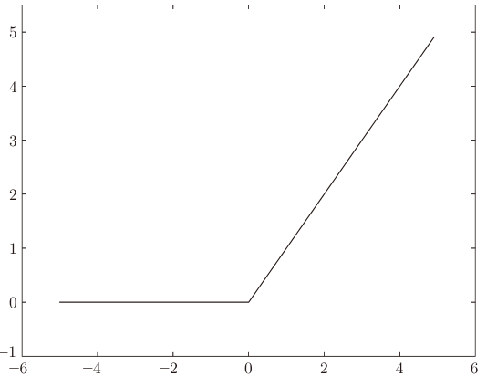
在矩阵的乘积运算中，对应维度的元素个数要保持一致
权重符号的书写：
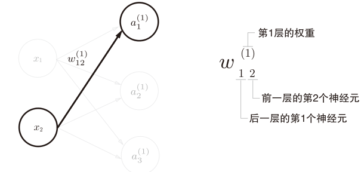
恒等函数会将输入按原样输出，对于输入的信息，不加以任何改动地直接输出。恒等函数进行的转换处理可以用一根箭头来表示
softmax函数
$yk=\frac{exp(a_k)}{\sum{i=1}^nexp(ai)}$或者$y_k=\frac{e^{a_k}}{\sum{i=1}^ne^{a_i}}$,分子是输入信号$a_k$的指数函数，分母是所有输入信号的指数函数的和。
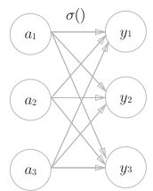
用图表示softmax函数，输出通过箭头与所有的输入信号相连，这是因为输出层的各个神经元都受到所有输入信号的影响。

softmax函数的实现改进:
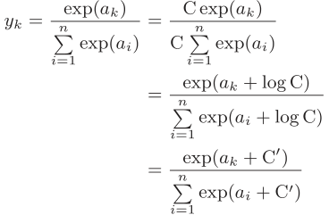
在进行softmax的指数函数的运算时，加上（或者减去）某个常数并不会改变运算的结果。为了防止溢出，一般会使用输入信号中的最大值。
softmax函数的输出是0.0到1.0之间的实数。并且，softmax函数的输出值的总和是1。
和求解机器学习问题的步骤（分成学习和推理两个阶段进行）一样，使用神经网络解决问题时，也需要首先使用训练数据（学习数据）进行权重参数的学习；进行推理时，使用刚才学习到的参数，对输入数据进行分类。
把数据限定到某个范围内的处理称为正规化（normalization）。此外，对神经网络的输入数据进行某种既定的转换称为预处理（pre-processing）。
为什么批处理可以缩短处理时间呢？这是因为大多数处理数值计算的库都进行了能够高效处理大型数组运算的最优化。并且，在神经网络的运算中，当数据传送成为瓶颈时，批处理可以减轻数
据总线的负荷（严格地讲，相对于数据读入，可以将更多的时间用在计算上）。
批处理输入数据和权重参数的“形状”：
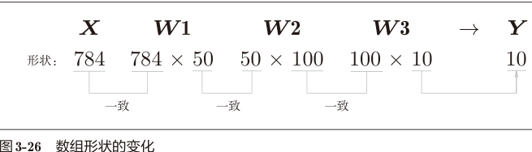
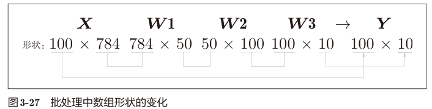
这种打包式的输入数据称为批（batch）。
总结：
• 神经网络中的激活函数使用平滑变化的sigmoid函数或ReLU函数。
• 机器学习的问题大体上可以分为回归问题和分类问题。
• 关于输出层的激活函数，回归问题中一般用恒等函数，分类问题中一般用softmax函数。
• 分类问题中，输出层的神经元的数量设置为要分类的类别数。
• 输入数据的集合称为批。通过以批为单位进行推理处理，能够实现高速的运算。
注：回归输出值（连续），分类输出类别（离散）
第4章 神经网络的学习
神经网络的特征就是可以从数据中学习。（“从数据中学习”，是指可以由数据自动决定权重参数的值。）
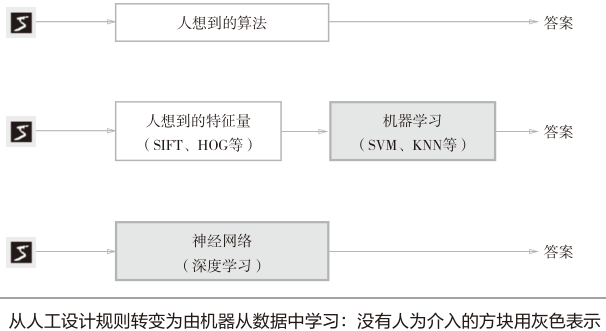
深度学习有时也称为端到端机器学习（end-to-end machine learning）。这里所说的端到端是从原始数据（输入）中获得目标结果（输出）的意思。
机器学习中，一般将数据分为训练数据和测试数据两部分来进行学习和实验等。训练数据也可以称为监督数据。
使用训练数据进行学习，寻找最优的参数；然后，使用测试数据评价训练得到的模型的实际能力。
泛化能力是指处理未被观察过的数据（不包含在训练数据中的数据）的能力。获得泛化能力是机器学习的最终目标。
只对某个数据集过度拟合的状态称为过拟合（over fitting）。
神经网络以某个指标为线索寻找最优权重参数。神经网络的学习中所用的指标称为损失函数（loss function）。损失函数是表示神经网络性能的“恶劣程度”的指标，即当前的神经网络对监督数据在多大程度上不拟合，在多大程度上不一致。
均方误差：$E=\frac{1}{2}\sum\limits_{k}(y_k-t_k)^2$
$y_k$是表示神经网络的输出，$t_k$表示监督数据，k表示数据的维数
交叉熵误差：$E=-\sum\limits_{k}t_klogy_k$
log表示以e为底数的自然对数（$log_e$）。$y_k$是神经网络的输出，$t_k$是正确解标签。并且，$t_k$中只有正确解标签的索引为1，其他均为0（one-hot表示）。因此，实际上只计算对应正确解标签的输出的自然对数。
将正确解标签表示为1，其他标签表示为0的表示方法称为one-hot表示。
为什么要导入损失函数呢？
对该权重参数的损失函数求导，表示的是“如果稍微改变这个权重参数的值，损失函数的值会如何变化”。
在进行神经网络的学习时，不能将识别精度作为指标。因为如果以识别精度为指标，则参数的导数在绝大多数地方都会变为0。
sigmoid函数的导数在任何地方都不为0。这对神经网络的学习非常重要。得益于这个斜率不会为0的性质，神经网络的学习得以正确进行。
像$(\frac{\partial f}{ {\partial x_0} },\frac{\partial f}{ {\partial x_1} })$由全部变量的偏导数汇总而成的向量称为梯度，梯度指示的方向是各点处的函数值减小最多的方向。
函数的极小值、最小值以及被称为鞍点（saddle point）的地方，梯度为0。梯度法是要寻找梯度为0的地方，但是那个地方不一定就是最小值（也有可能是极小值或者鞍点）。此外，当函数很复杂且呈扁平状时，学习可能会进入一个（几乎）平坦的地区，陷入被称为“学习高原”的无法前进的停滞期。
在梯度法中，函数的取值从当前位置沿着梯度方向前进一定距离，然后在新的地方重新求梯度，再沿着新梯度方向前进，如此反复，不断地沿梯度方向前进。像这样，通过不断地沿梯度方向前进，逐渐减小函数值的过程就是梯度法。
梯度法：$x_0=x_0-\eta \frac{\partial f}{\partial x_0}$,$x_1=x_1-\eta \frac{\partial f}{\partial x_1}$
η表示更新量，在神经网络的学习中，称为学习率（learning rate）。学习率决定在一次学习中，应该学习多少，以及在多大程度上更新参数。
超参数是一种和神经网络的参数（权重和偏置）性质不同的参数。超参数是人工设定的。包括各层的神经元数量、batch大小、参数更新时的学习率或权值衰减等。
神经网络的学习步骤：
前提
神经网络存在合适的权重和偏置，调整权重和偏置以便拟合训练数据的过程称为“学习”。神经网络的学习分成下面4个步骤。
步骤1（mini-batch）
从训练数据中随机选出一部分数据，这部分数据称为mini-batch。我们的目标是减小mini-batch的损失函数的值。
步骤2（计算梯度）
为了减小mini-batch的损失函数的值，需要求出各个权重参数的梯度。梯度表示损失函数的值减小最多的方向。
步骤3（更新参数）
将权重参数沿梯度方向进行微小更新。
步骤4（重复）
重复步骤1、步骤2、步骤3。
这里使用的数据是随机选择的mini batch数据，所以又称为随机梯度下降法（“对随机选择的数据进行的梯度下降法”）。一般由一个名为SGD的函数来实现。
要评价神经网络的泛化能力，就必须使用不包含在训练数据中的数据。
epoch是一个单位。一个epoch表示学习中所有训练数据均被使用过一次时的更新次数。
总结
• 机器学习中使用的数据集分为训练数据和测试数据。
• 神经网络用训练数据进行学习，并用测试数据评价学习到的模型的泛化能力。
• 神经网络的学习以损失函数为指标，更新权重参数，以使损失函数的值减小。
第5章 误差反向传播法
计算图通过节点和箭头表示计算过程。节点用○表示，○中是计算的内容。将计算的中间结果写在箭头的上方，表示各个节点的计算结果从左向右传递。
用计算图解题的情况下，需要按如下流程进行。
1.构建计算图。
2.在计算图上，从左向右进行计算。
“从左向右进行计算”是一种正方向上的传播，简称为正向传播（forward propagation）。正向传播是从计算图出发点到结束点的传播。反向传播使用与正方向相反的箭头（粗线）表示。反向传播传递“局部导数”，将导数的值写在箭头的下方。计算图的优点是，可以通过正向传播和反向传播高效地计算各个变量的导数值。
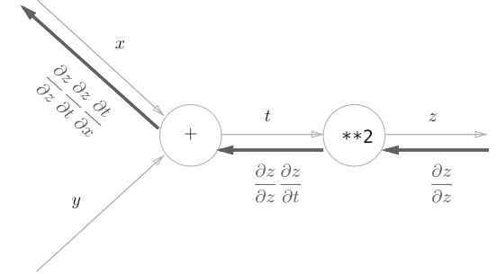
ReLU函数：$ h(x)=
\begin{cases}
x, & x>0,\
0, & x \le 0
\end{cases}$的计算图：
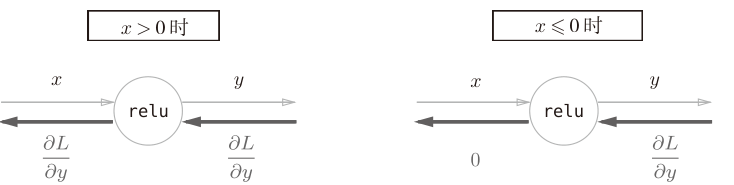
sigmoid层（$h(x)=\frac{1}{1+exp(-x)}$）的计算图（拆分成几个步骤推导）：
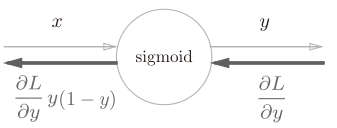
神经网络的正向传播中进行的矩阵的乘积运算在几何学领域被称为“仿射变换”。因此，这里将进行仿射变换的处理实现为“Affine层”。几何中，仿射变换包括一次线性变换和一次平移，分别对应神经网络的加权和运算与加偏置运算。
乘以一个矩阵，偏导为矩阵的转置，注意标明形状：
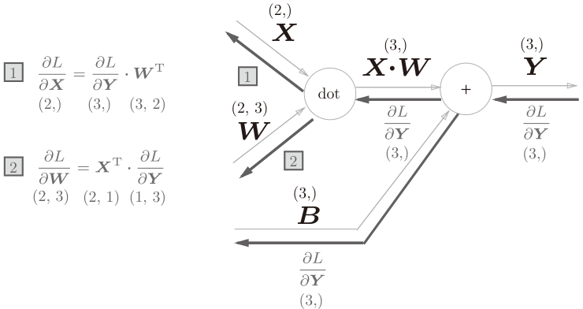
总结：
• 通过使用计算图，可以直观地把握计算过程。
• 计算图的节点是由局部计算构成的。局部计算构成全局计算。
• 计算图的正向传播进行一般的计算。通过计算图的反向传播，可以计算各个节点的导数。
• 通过将神经网络的组成元素实现为层，可以高效地计算梯度（反向传播法）。
第6章 与学习相关的技巧
寻找最优参数的问题，解决这个问题的过程称为最优化。
SGD随机梯度下降法的缺点是，如果函数的形状非均向（anisotropic）（比如$y=\frac{1}{20}x^2+y^2$），比如呈延伸状，搜索的路径就会非常低效。根本原因是，梯度的方向并没有指向最小值的方向。
对SGD做出改进的三种方法：
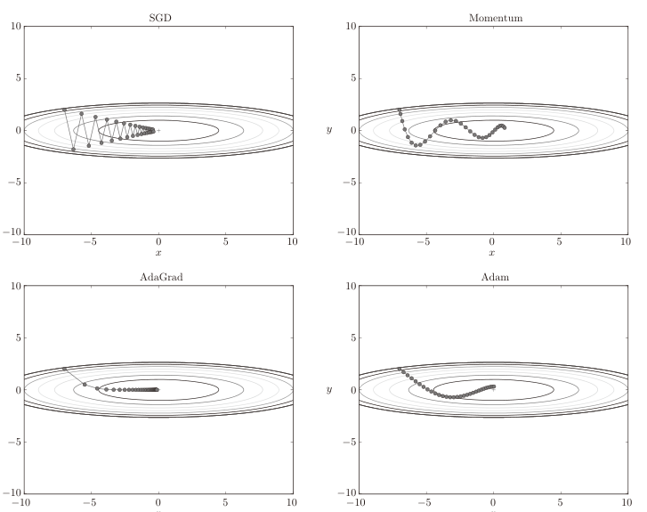
Momentum方法:新出现了一个变量v，对应物理上的速度。物体在梯度方向上受力，在这个力的作用下，物体的速度增加这一物理法则。在物体不受任何力时，物体逐渐减速，对应物理上的地面摩擦或空气阻力。
和SGD相比，我们发现“之”字形的“程度”减轻了。这是因为虽然x轴方向上受到的力非常小，但是一直在同一方向上受力，所以朝同一个方向会有一定的加速。反过来，虽然y轴方向上受到的力很大，但是因为交互地受到正方向和反方向的力，它们会互相抵消，所以y轴方向上的速度不稳定。因此，和SGD时的情形相比，可以更快地朝x轴方向靠近，减弱“之”字形的变动程度。
AdaGrad:为参数的每个元素适当地调整学习率，与此同时进行学习。参数的元素中变动较大（被大幅更新）的元素的学习率将变小。也就是说，可以按参数的元素进行学习率衰减，使变动大的参数的学习率逐渐减小。
函数的取值高效地向着最小值移动。由于y轴方向上的梯度较大，因此刚开始变动较大，但是后面会根据这个较大的变动按比例进行调整，减小更新的步伐。因此，y轴方向上的更新程度被减 弱，“之”字形的变动程度有所衰减。
Adam：融合了Momentum和AdaGrad的方法。通过组合前面两个方法的优点，有望实现参数空间的高效搜索。此外，进行超参数的“偏置校正”也是Adam的特征。
基于 Adam 的更新过程就像小球在碗中滚动一样。虽然Momentun也有类似的移动，但是相比之下，Adam的小球左右摇晃的程度有所减轻。这得益于学习的更新程度被适当地调整了。
（目前）并不存在能在所有问题中都表现良好的方法。这4种方法各有各的特点，都有各自擅长解决的问题和不擅长解决的问题。
为什么不能将权重初始值设成一样的值呢？这是因为在误差反向传播法中，所有的权重值都会进行相同的更新。使得神经网络拥有许多不同的权重的意义丧失了。为了防止“权重均一化”（严格地讲，是为了瓦解权重的对称结构），必须随机生成初始值。
Xavier初始值：与前一层有n个节点连接时，初始值使用标准差为$\sqrt\frac{1}$的分布
He 初始值:当前一层的节点数为n 时，使用标准差为$\sqrt\frac{2}$的高斯分布。（直观上）可以解释为，因为ReLU的负值区域的值为0，为了使它更有广度，所以需要2倍的系数。
激活函数使用ReLU时，权重初始值使用He初始值，当激活函数为 sigmoid或 tanh等S型曲线函数时，初始值使用Xavier初始值。
Batch Norm(强制性调整激活值的分布)的优点：
• 可以使学习快速进行（可以增大学习率）。
• 不那么依赖初始值（对于初始值不用那么神经质）。
• 抑制过拟合（降低Dropout等的必要性）。
发生过拟合的原因，主要有以下两个：
• 模型拥有大量参数、表现力强。
• 训练数据少。
抑制过拟合的办法：
1.权值衰减，该方法通过在学习的过程中对大的权重进行惩罚，来抑制过拟合。
2.Dropout是一种在学习的过程中随机删除神经元的方法。训练时，随机选出隐藏层的神经元，然后将其删除。被删除的神经元不再进行信号的传递。
集成学习，就是让多个模型单独进行学习，推理时再取多个模型的输出的平均值。
可以将Dropout理解为，通过在学习过程中随机删除神经元，从而每一次都让不同的模型进行学习。并且，推理时，通过对神经元的输出乘以删除比例（比如0.5等），可以取得模型的平均值。也就是说，可以理解成，Dropout将集成学习的效果（模拟地）通过一个网络实现了。
调整超参数时，必须使用超参数专用的确认数据。用于调整超参数的数据，一般称为验证数据（validation data）。如果使用测试数据调整超参数，超参数的值会对测试数据发生过拟合。
超参数的最优化：
步骤0 设定超参数的范围。
步骤1 从设定的超参数范围中随机采样。
步骤2 使用步骤1中采样到的超参数的值进行学习，通过验证数据评估识别精度（但是要将epoch设置得很小）。
步骤3 重复步骤1和步骤2（100次等），根据它们的识别精度的结果，缩小超参数的范围。
总结：
• 参数的更新方法，除了SGD之外，还有Momentum、AdaGrad、Adam等方法。
• 权重初始值的赋值方法对进行正确的学习非常重要。
• 作为权重初始值，Xavier初始值、He初始值等比较有效。
• 通过使用Batch Normalization，可以加速学习，并且对初始值变得健壮。
• 抑制过拟合的正则化技术有权值衰减、Dropout等。
• 逐渐缩小“好值”存在的范围是搜索超参数的一个有效方法。
第7章 卷积神经网络
之前介绍的神经网络中，相邻层的所有神经元之间都有连接，这称为全连接（fully-connected）。
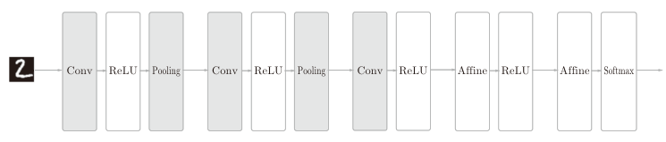
CNN 中 新 增 了 Convolution 层（卷积层） 和 Pooling 层（池化层）。Pooling 层有时会被省略。
全连接层存在什么问题：数据的形状被“忽视”了。形状中应该含有重要的空间信息。因为全连接层会忽视形状，将全部的输入数据作为相同的神经元（同一维度的神经元）处理，所以无法利用与形状相关的信息。另一个问题是参数量巨大，因此全连接神经网络一般层数不深。
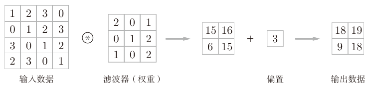
卷积运算：以一定间隔滑动滤波器的窗口并应用，将各个位置上滤波器的元素和输入的对应元素相乘，然后再求和
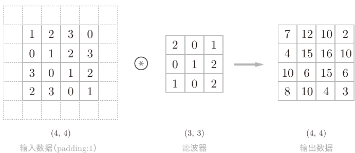
使用填充主要是为了调整输出的大小。比如，对大小为(4, 4)的输入数据应用(3, 3)的滤波器时，输出大小变为(2, 2)。将填充的幅度设为1（输入数据变成了(6, 6)的形状），那么相对于输入大小(4, 4)，输出大小也保持为原来的(4, 4)。“幅度为1的填充”是指用幅度为1像素的0填充周围。
应用滤波器的位置间隔称为步幅（stride）。
假设输入大小为(H, W)，滤波器大小为(FH, FW)，输出大小为(OH, OW)，填充为P，步幅为S。此时，输出大小=输入+2倍填充-滤波器的结果除以步幅再加一：
$OH=\frac{H+2P-FH}{S}+1$,$OW=\frac{W+2P-FW}{S}+1$
上图中的计算例子：输入大小：(4, 4)；填充：1；步幅：1；滤波器大小：(3, 3)
3维数据的卷积运算中，输入数据和滤波器的通道数要设为相同的值。
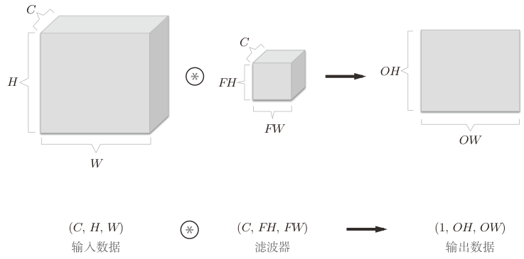
把3维数据表示为多维数组时，书写顺序为（channel, height, width）。比如，通道数为 C、高度为 H、长度为W的数据的形状可以写成（C, H, W）。
卷积运算对应的批处理：将在各层间传递的数据保存为4维数据。按(batch_num, channel, height, width)的顺序保存数据。
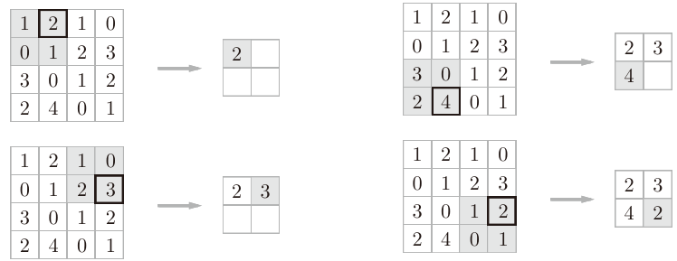
图上的例子是按步幅2进行2 × 2的Max池化时的处理顺序。一般来说，池化的窗口大小会和步幅设定成相同的值。
池化层特征：
没有要学习的参数
池化层和卷积层不同，没有要学习的参数。池化只是从目标区域中取最大值（或者平均值），所以不存在要学习的参数。
通道数不发生变化
经过池化运算，输入数据和输出数据的通道数不会发生变化。计算是按通道独立进行的。
对微小的位置变化具有鲁棒性（健壮）
输入数据发生微小偏差时，池化仍会返回相同的结果。因此，池化对输入数据的微小偏差具有鲁棒性。
具有代表性的CNN：LeNet和AlexNet
总结：
• CNN在此前的全连接层的网络中新增了卷积层和池化层。
• LeNet和AlexNet是CNN的代表性网络。
第8章 深度学习
进一步提高识别精度的技术和线索：集成学习、学习率衰减、Data Augmentation（数据扩充）等都有助于提高识别精度。
Data Augmentation基于算法“人为地”扩充输入图像（训练图像）。对于输入图像，通过施加旋转、垂直或水平方向上的移动等微小变化，增加图像的数量。这在数据集的图像数量有限时尤其有效。还可以通过裁剪图像的 “crop处理”、将图像左右翻转的“flip处理” 等。亮度等外观上的变化、放大缩小等尺度上的变化也是有效的。
加深层的动机：层越深，识别性能也越高。可以减少网络的参数数量。与没有加深层的网络相比，加深了层的网络可以用更少的参数达到同等水平（或者更强）的表现力。
eg.一次5 × 5的卷积运算的区域可以由两次3 × 3的卷积运算抵充。前者的参数数量25（5 × 5），后者一共是18（2 × 3 × 3），通过叠加卷积层，参数数量减少了。
叠加小型滤波器来加深网络的好处是可以减少参数的数量，扩大感受野（receptive field，给神经元施加变化的某个局部空间区域）。并且，通过叠加层，将ReLU等激活函数夹在卷积层的中间，进一步提高了网络的表现力。这是因为向网络添加了基于激活函数的“非线性”表现力，通过非线性函数的叠加，可以表现更加复杂的东西。
另一个好处就是使学习更加高效。与没有加深层的网络相比，通过加深层，可以减少学习数据，从而高效地进行学习。可以分层次地传递信息，将各层要解决的问题分解成容易解决的简单问题。
总结：性能更高、减少参数、学习更高效、分层次传递信息
本章总结：
• 对于大多数的问题，都可以期待通过加深网络来提高性能。
• VGG、GoogLeNet、ResNet等是几个著名的网络。
• 深度学习（神经网络）不仅可以用于物体识别，还可以用于物体检测、图像分割。
• 深度学习的应用包括图像标题的生成、图像的生成、强化学习等。最近，深度学习在自动驾驶上的应用也备受期待。